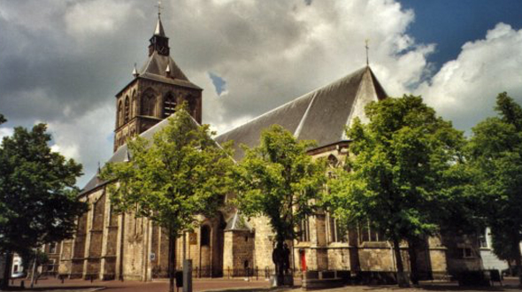
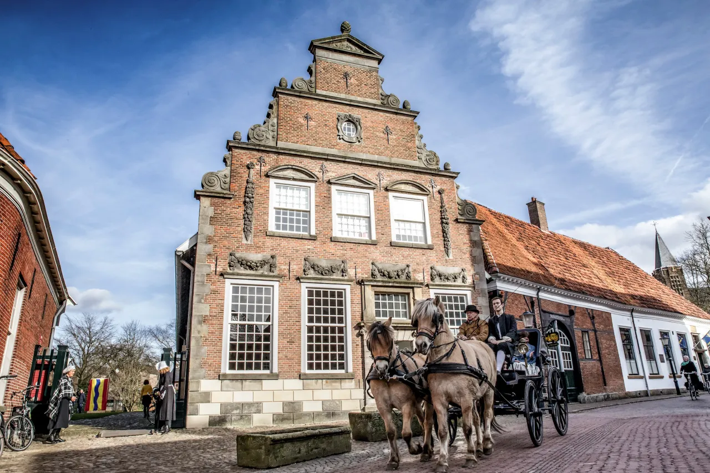

Oldenzaal
- Oldenzaal ligt in de regio Twente, vlakbij de Duitse grens.
- De stad heeft een rijke geschiedenis die teruggaat tot de 8e eeuw.
- Oldenzaal heeft een aantal historische bezienswaardigheden, waaronder de Plechelmusbasiliek en het Palthehuis.
- De stad heeft een rijke geschiedenis die teruggaat tot de 8e eeuw.
- De stad heeft een levendig centrum met veel winkels, restaurants en cafés.
De Plechelmusbasiliek is een imposant bouwwerk dat al eeuwenlang het silhouet van de stad Oldenzaal bepaalt. De kerk is vernoemd naar de heilige Plechelmus, een Ierse missionaris die in de 8e eeuw naar Twente kwam om het christendom te prediken. De huidige basiliek werd gebouwd in de 19e eeuw op de plek waar eerder een middeleeuwse kerk stond. Het indrukwekkende neogotische interieur van de kerk is voorzien van prachtige gewelfschilderingen, glas-in-loodramen en een groot orgel. De Plechelmusbasiliek is niet alleen een belangrijk religieus monument, maar ook een geliefde toeristische attractie waar jaarlijks duizenden bezoekers uit binnen- en buitenland op afkomen.
Het Palthehuis is een bijzonder museum dat gevestigd is in een historisch pand in het centrum van Oldenzaal. Het museum is gewijd aan de familie Palthe, die in de 18e en 19e eeuw een belangrijke rol speelde in het maatschappelijke en culturele leven van Oldenzaal. Het interieur van het museum is grotendeels intact gebleven en geeft een goed beeld van het leven in de 18e en 19e eeuw. Zo kunt u er onder meer een kijkje nemen in de oude apotheek van de familie Palthe en wandelen door de sfeervolle tuin achter het huis. Het Palthehuis is een boeiende bezienswaardigheid voor iedereen die geïnteresseerd is in de geschiedenis van Oldenzaal en omgeving
